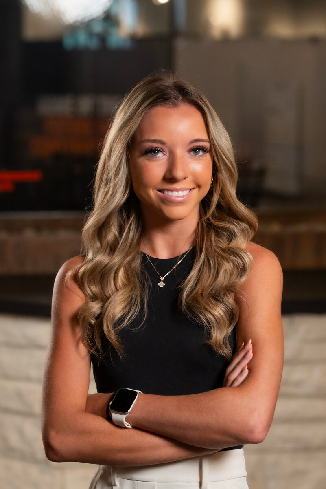
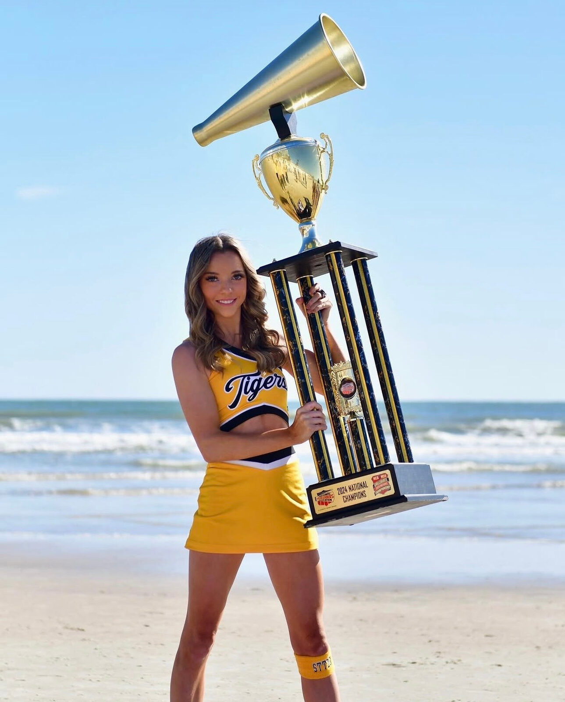
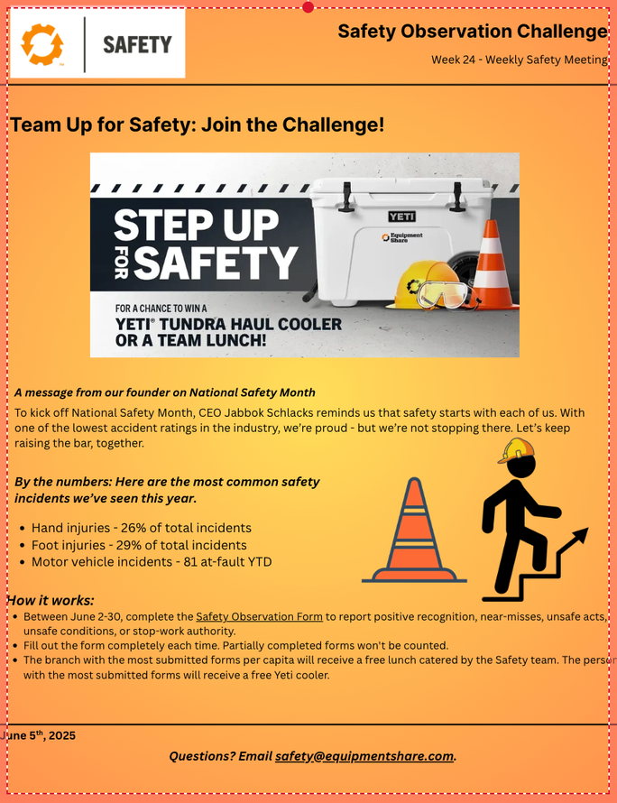
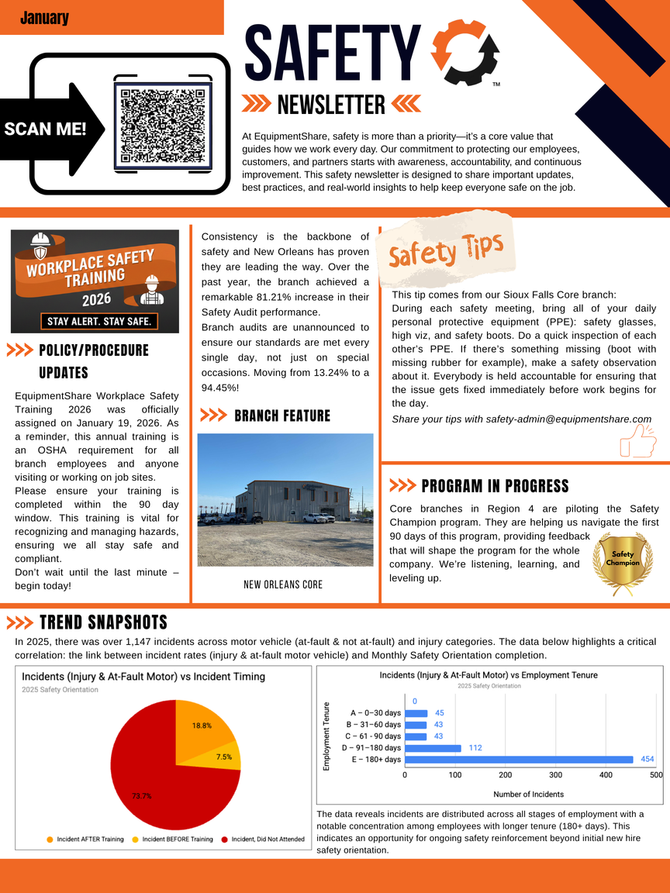
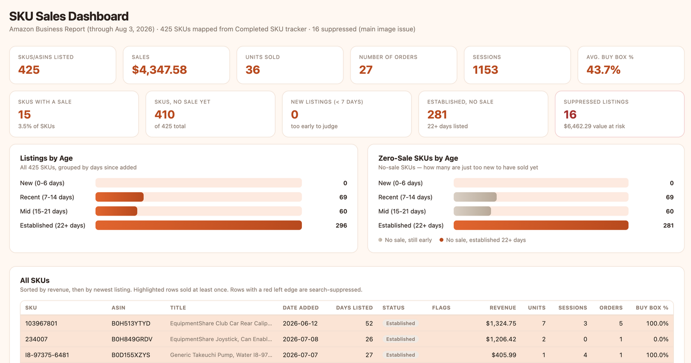
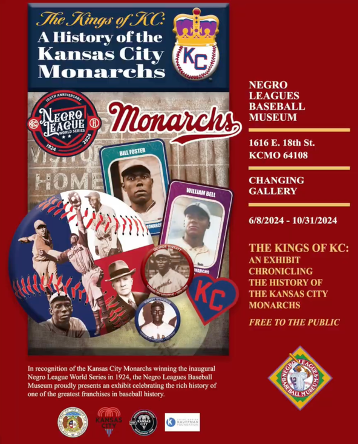
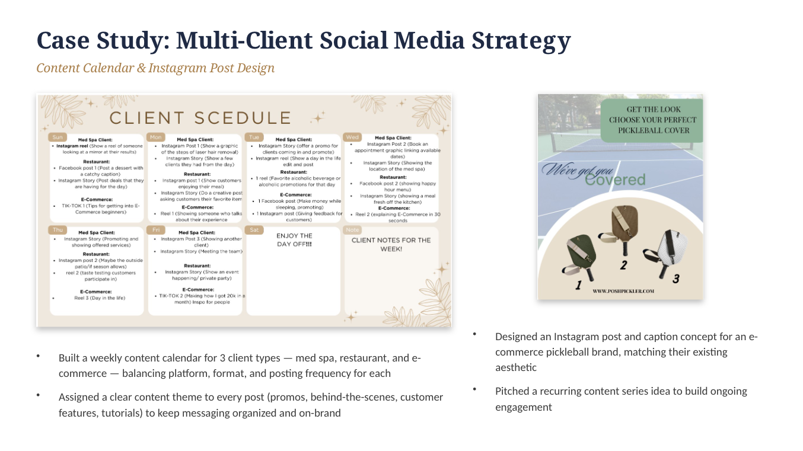
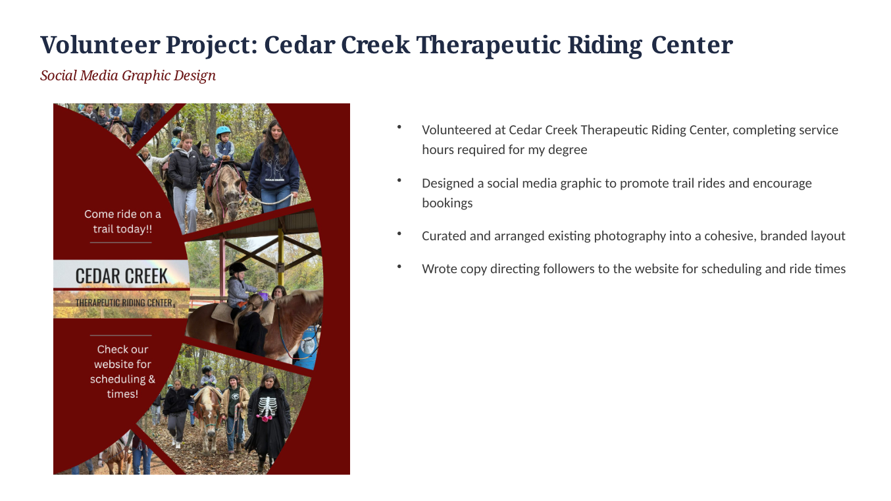
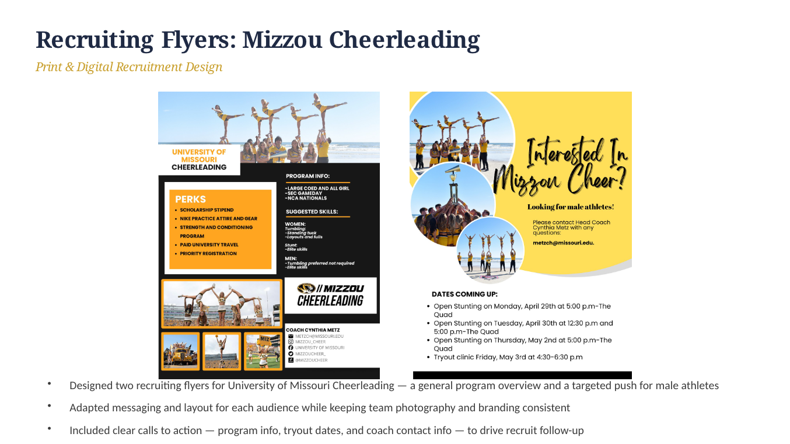

“I enjoy creating engaging, informational content while adding my own creative perspective.”
Hello! My name is Taylor Herrick, and I have always had a passion for creating and editing content. This portfolio highlights a few of the projects and creations I am most proud of from my internship experiences, along with personal projects I pursued throughout college.
I enjoy creating engaging, informational content while adding my own creative perspective. I have always been drawn to the art of storytelling and finding unique ways to communicate ideas through content. My experiences have strengthened my interest in digital marketing, and I hope to pursue a career where I can combine creativity, strategy, and storytelling.
I am a hardworking and motivated individual who is always eager to learn, take on new challenges, and grow from the people and experiences around me. I look forward to continuing to develop my skills and making an impact in the digital marketing industry.

I grew up in Kansas City, where I developed a strong work ethic and learned early on how to balance academics with my passion for sports. I continued that balance at the University of Missouri, where I became a collegiate cheerleader while pursuing my degree.
As a member of the Mizzou Cheerleading team, I learned the importance of teamwork, discipline, time management, and commitment. I had the opportunity to serve as a captain, cheer at football games, travel to sporting events, and compete alongside an incredible team. One of my proudest accomplishments was being part of a team that won two back-to-back national championships.
Balancing the demands of being a student and collegiate athlete helped shape the collaborative, motivated, and positive individual I am today — lessons I carry into every internship and new opportunity I pursue.
I earned my Bachelor of Science in Business Administration from the University of Missouri, with an emphasis in Marketing, along with a certificate in Digital Marketing. Throughout my time at Mizzou, I focused on building a strong foundation in marketing, business strategy, and digital marketing while gaining hands-on experience that prepared me for a career in the industry.


At EquipmentShare, I was responsible for creating and organizing weekly safety meetings, developing content that kept employees informed, engaged, and compliant with safety standards. This role sharpened my ability to communicate clearly, create consistent content on a recurring schedule, and tailor messaging for a specific audience.

I had the opportunity to post products on Amazon and track data insights to see how listings were performing — similar to social media. During my internships I created content and built dashboards to track performance, learning to understand both sides: making the content, and then looking at whether it's actually working.
425 SKUs listed · $4,347.58 revenue · 1,153 sessions

Designed exhibit posters, social content, and event materials for the museum, including work supporting "The Kings of KC" exhibit chronicling the history of the Kansas City Monarchs — combining archival storytelling with modern content design.

Built a weekly content calendar for three client types — med spa, restaurant, and eCommerce — plus a matching Instagram post concept for an eCommerce pickleball brand.

Volunteered at Cedar Creek and designed a social media graphic and monthly content calendar to promote trail rides and encourage bookings.

Designed two recruiting flyers — a general program overview and a targeted push for male athletes — keeping team photography and branding consistent.